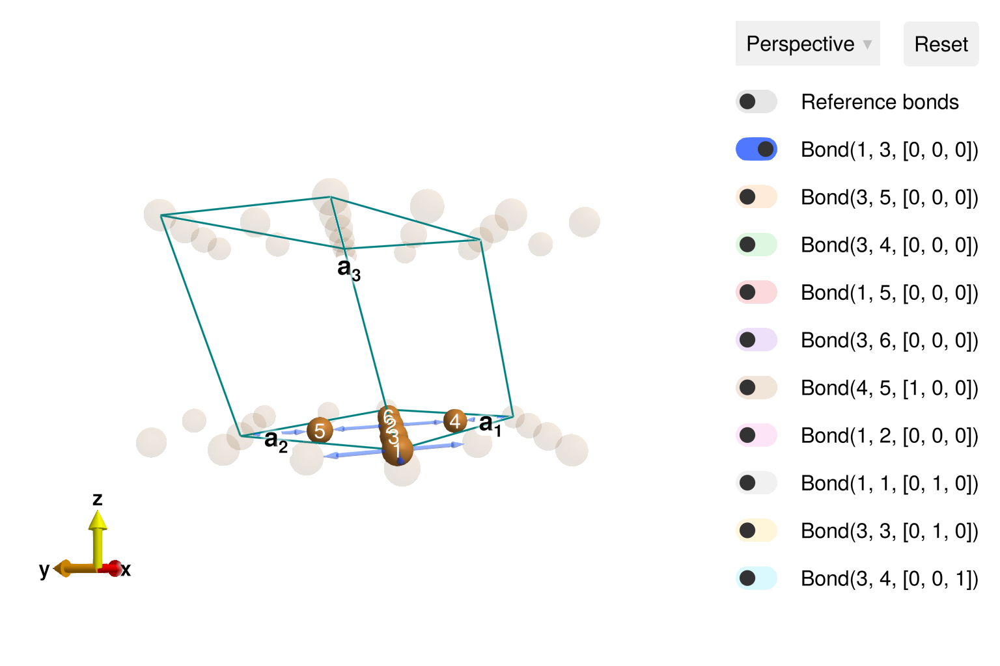
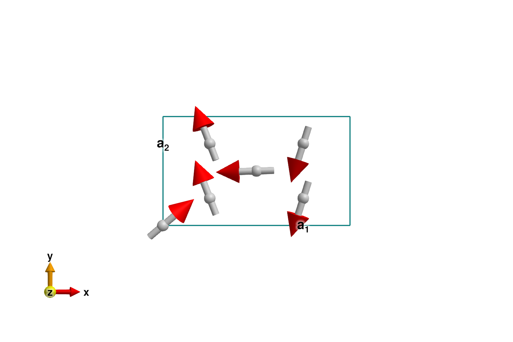
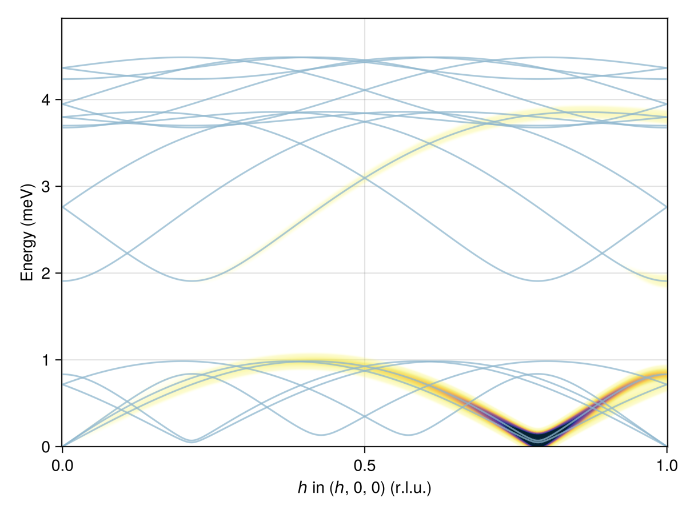
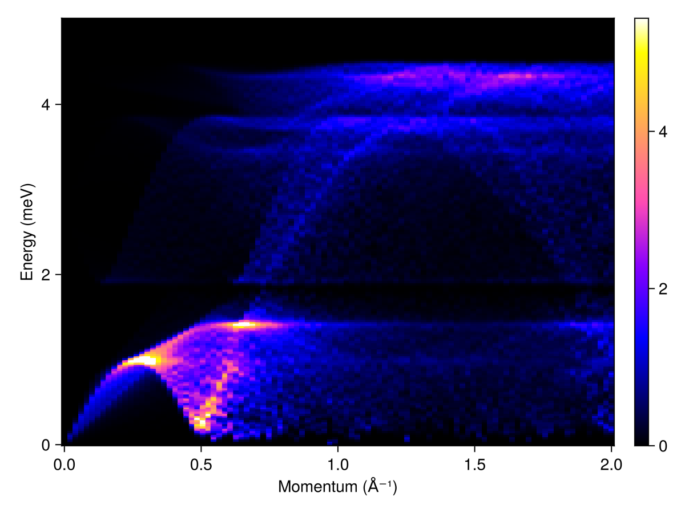

Download this example as Julia file or Jupyter notebook.
SW18 - Distorted kagome
This is a Sunny port of SpinW Tutorial 18, originally authored by Goran Nilsen and Sandor Toth. This tutorial illustrates spin wave calculations for KCu₃As₂O₇(OD)₃. The Cu ions are arranged in a distorted kagome lattice and exhibit an incommensurate helical magnetic order, as described in G. J. Nilsen, et al., Phys. Rev. B 89, 140412 (2014). The model follows Toth and Lake, J. Phys.: Condens. Matter 27, 166002 (2015).
using Sunny, GLMakieBuild the distorted kagome crystal, with spacegroup 12 ("C 1 2/m 1" setting).
units = Units(:meV, :angstrom)
latvecs = lattice_vectors(10.2, 5.94, 7.81, 90, 117.7, 90)
positions = [[0, 0, 0], [1/4, 1/4, 0]]
types = ["Cu1", "Cu2"]
cryst = Crystal(latvecs, positions, "C 1 2/m 1"; types)
view_crystal(cryst)
Define the interactions.
moments = [1 => Moment(s=1/2, g=2), 3 => Moment(s=1/2, g=2)]
sys = System(cryst, moments, :dipole)
J = -2
Jp = -1
Jab = 0.75
Ja = -J/.66 - Jab
Jip = 0.01
set_exchange!(sys, J, Bond(1, 3, [0, 0, 0]))
set_exchange!(sys, Jp, Bond(3, 5, [0, 0, 0]))
set_exchange!(sys, Ja, Bond(3, 4, [0, 0, 0]))
set_exchange!(sys, Jab, Bond(1, 2, [0, 0, 0]))
set_exchange!(sys, Jip, Bond(3, 4, [0, 0, 1]))Use minimize_spiral_energy! to optimize the generalized spiral order. This determines the propagation wavevector k and fits the spin values within the unit cell. One must provide a fixed axis perpendicular to the polarization plane. For this system, all interactions are rotationally invariant and the axis vector is arbitrary. In other cases, a good axis will frequently be determined from symmetry considerations.
axis = [0, 0, 1]
randomize_spins!(sys)
k = minimize_spiral_energy!(sys, axis; k_guess=randn(3))
plot_spins(sys; ndims=2)
If successful, the optimization process will find one two propagation wavevectors, ±k_ref, with opposite chiralities. In this system, the spiral_energy_per_site is independent of chirality.
k_ref = [0.785902495, 0.0, 0.107048756]
k_ref_alt = [1, 0, 1] - k_ref
@assert isapprox(k, k_ref; atol=1e-6) || isapprox(k, k_ref_alt; atol=1e-6)
@assert spiral_energy_per_site(sys; k, axis) ≈ -0.78338383838Check the energy with a real-space calculation using a large magnetic cell. First, we must determine a lattice size for which k becomes approximately commensurate.
suggest_magnetic_supercell([k_ref]; tol=1e-3)Possible magnetic supercell in multiples of lattice vectors:
[1 0 -7; 0 1 0; 2 0 14]
for the rationalized wavevectors:
[[11/14, 0, 3/28]]Resize the system as suggested and perform a real-space calculation. Working with a commensurate wavevector increases the energy slightly. The precise value might vary from run-to-run due to trapping in a local energy minimum.
new_shape = [14 0 1; 0 1 0; 0 0 2]
sys2 = reshape_supercell(sys, new_shape)
randomize_spins!(sys2)
minimize_energy!(sys2)
energy_per_site(sys2)-0.7833837597216422Return to the original system (with a single chemical cell) and construct SpinWaveTheorySpiral for calculations on the incommensurate spiral phase.
measure = ssf_perp(sys; apply_g=false)
swt = SpinWaveTheorySpiral(sys; measure, k, axis)SpinWaveTheorySpiral(SpinWaveTheory(System([Dipole mode], Supercell (1×1×1)×6, Energy per site -0.5870), StaticArraysCore.SMatrix{3, 3, Float64, 9}[[0.3670406893711464 -0.5325965451391712 0.7626414966757137; -0.4327631284926655 0.6279634759036655 0.646821418591119; -0.8234058579845024 -0.5674528993994178 -3.230243680109398e-12], [-0.005185989078987046 -0.030357374188763615 -0.9995256551733108; 0.16831195660531292 0.9852525669153711 -0.030797153283444623; 0.9857201381634465 -0.16839183240001904 -4.956640483401517e-12], [0.9312693293750622 0.0625873612526795 -0.35891539166877306; 0.35810756791516246 0.024067159754239915 0.9333700989549919; 0.06705524563529325 -0.9977492641103729 3.8687443839487776e-12], [0.7260359942297486 -0.618391635910003 -0.3007715407404283; -0.2289732936009047 0.1950249997741957 -0.9536962201249563; 0.6484157353892445 0.7612864336763302 1.1498081966417694e-12], [0.9251401338662268 -0.12367487350283028 -0.35891539166499836; 0.35575066510459497 -0.047557571969955824 0.9333700989564434; -0.13250357348999534 -0.9911825275963967 6.720907334210805e-12], [0.5887081597760225 -0.7503060594794948 -0.3007715407439377; -0.18566358608224195 0.2366274551368968 -0.9536962201238495; 0.7867348571254558 0.6172910695804604 3.926920070439136e-12]], MeasureSpec, 1.0e-8, -0.5869788383848269, Sunny.GaussianState(Sunny.BosonMonomial{2}[], nothing, NamedTuple()), Sunny.QuadraticTable(StaticArraysCore.SVector{3, Float64}[[-1.0, -1.0, 0.0], [-1.0, 0.0, -1.0], [-1.0, 0.0, 0.0], [0.0, -1.0, 0.0], [0.0, 0.0, -1.0], [0.0, 0.0, 0.0], [0.0, 0.0, 1.0], [0.0, 1.0, 0.0], [1.0, 0.0, 0.0], [1.0, 0.0, 1.0], [1.0, 1.0, 0.0]], UnitRange{Int64}[1:2, 3:4, 5:8, 9:12, 13:18, 19:70, 71:72, 73:84, 85:96, 97:102, 103:108], Int32[7, 7, 9, 11, 7, 7, 9, 11, 7, 7 … 10, 10, 12, 12, 2, 6, 8, 8, 12, 12], Int32[2, 6, 4, 6, 2, 4, 4, 6, 2, 5 … 3, 9, 5, 11, 1, 1, 1, 7, 1, 7], ComplexF64[-0.3031529450087107 + 0.14058046926621975im, 0.2746470469829705 - 0.8813232162241965im, 0.003578001106085832 + 0.00265506842377432im, 0.002261624910983137 + 0.003838819221075728im, -0.3031529450087107 + 0.14058046926621975im, 0.09408049786517515 - 0.9183193735252779im, 0.8158926764635115 + 0.6054360572394472im, 0.5157190137923668 + 0.8753671102604501im, -0.3031529450087107 + 0.14058046926621975im, 0.15187063547312613 + 0.2985972372303425im … 0.003578001106085832 + 0.00265506842377432im, -0.0003899128032365054 - 0.00038006348925291415im, 0.002261624910983137 + 0.003838819221075728im, -0.00038991280323011715 - 0.0003800634892586548im, -0.029243460243889713 + 0.028504761693014705im, 0.07672683989200163 + 0.004754357632877126im, -0.3031529450087107 + 0.14058046926621975im, -0.029243460243889713 - 0.028504761693014705im, 0.2746470469829705 - 0.8813232162241965im, 0.07672683989200163 - 0.004754357632877126im]), Sunny.QuadraticTable(StaticArraysCore.SVector{3, Float64}[[-1.0, -1.0, 0.0], [-1.0, 0.0, -1.0], [-1.0, 0.0, 0.0], [0.0, -1.0, 0.0], [0.0, 0.0, -1.0], [0.0, 0.0, 0.0], [0.0, 0.0, 1.0], [0.0, 1.0, 0.0], [1.0, 0.0, 0.0], [1.0, 0.0, 1.0], [1.0, 1.0, 0.0]], UnitRange{Int64}[1:2, 3:4, 5:8, 9:12, 13:18, 19:70, 71:72, 73:84, 85:96, 97:102, 103:108], Int32[7, 7, 9, 11, 7, 7, 9, 11, 7, 7 … 10, 10, 12, 12, 2, 6, 8, 8, 12, 12], Int32[2, 6, 4, 6, 2, 4, 4, 6, 2, 5 … 3, 9, 5, 11, 1, 1, 1, 7, 1, 7], ComplexF64[-0.3031529450087107 + 0.14058046926621975im, 0.2746470469829705 - 0.8813232162241965im, 0.003578001106085832 + 0.00265506842377432im, 0.002261624910983137 + 0.003838819221075728im, -0.3031529450087107 + 0.14058046926621975im, 0.09408049786517515 - 0.9183193735252779im, 0.8158926764635115 + 0.6054360572394472im, 0.5157190137923668 + 0.8753671102604501im, -0.3031529450087107 + 0.14058046926621975im, 0.15187063547312613 + 0.2985972372303425im … 0.003578001106085832 + 0.00265506842377432im, -0.0003899128032365054 - 0.00038006348925291415im, 0.002261624910983137 + 0.003838819221075728im, -0.00038991280323011715 - 0.0003800634892586548im, -0.029243460243889713 + 0.028504761693014705im, 0.07672683989200163 + 0.004754357632877126im, -0.3031529450087107 + 0.14058046926621975im, -0.029243460243889713 - 0.028504761693014705im, 0.2746470469829705 - 0.8813232162241965im, 0.07672683989200163 - 0.004754357632877126im]), Sunny.MonomialCache(ReentrantLock(nothing, 0x00000000, 0x00, Base.GenericCondition{Base.Threads.SpinLock}(Base.IntrusiveLinkedList{Task}(nothing, nothing), Base.Threads.SpinLock(0)), (1, 0, 1)), Sunny.BosonMonomial{2}[Sunny.BosonMonomial{2}(0.00391100000001794 + 0.0im, (11, 5), ([0.0, 0.0, -1.0], [0.0, 0.0, -1.0])), Sunny.BosonMonomial{2}(0.0039110000000168055 + 0.0im, (9, 3), ([0.0, 0.0, -1.0], [0.0, 0.0, -1.0])), Sunny.BosonMonomial{2}(0.003578001106085832 + 0.00265506842377432im, (4, 3), ([0.0, 0.0, 0.0], [0.0, 0.0, -1.0])), Sunny.BosonMonomial{2}(0.003578001106085832 - 0.00265506842377432im, (10, 9), ([0.0, 0.0, 0.0], [0.0, 0.0, -1.0])), Sunny.BosonMonomial{2}(-0.0003899128032365054 + 0.00038006348925291415im, (10, 3), ([0.0, 0.0, 0.0], [0.0, 0.0, -1.0])), Sunny.BosonMonomial{2}(-0.00038991280323011715 - 0.0003800634892586548im, (6, 11), ([0.0, 0.0, 0.0], [0.0, 0.0, -1.0])), Sunny.BosonMonomial{2}(0.002261624910983137 + 0.003838819221075728im, (6, 5), ([0.0, 0.0, 0.0], [0.0, 0.0, -1.0])), Sunny.BosonMonomial{2}(-0.00038991280323011715 + 0.0003800634892586548im, (12, 5), ([0.0, 0.0, 0.0], [0.0, 0.0, -1.0])), Sunny.BosonMonomial{2}(0.002261624910983137 - 0.003838819221075728im, (12, 11), ([0.0, 0.0, 0.0], [0.0, 0.0, -1.0])), Sunny.BosonMonomial{2}(-0.0003899128032365054 - 0.00038006348925291415im, (4, 9), ([0.0, 0.0, 0.0], [0.0, 0.0, -1.0])) … Sunny.BosonMonomial{2}(-0.029243460243889713 + 0.028504761693014705im, (8, 1), ([0.0, 0.0, 0.0], [1.0, 1.0, 0.0])), Sunny.BosonMonomial{2}(0.5000000000000001 + 0.0im, (10, 4), ([0.0, 1.0, 0.0], [0.0, 1.0, 0.0])), Sunny.BosonMonomial{2}(0.6233249999991377 + 0.0im, (7, 1), ([0.0, 1.0, 0.0], [0.0, 1.0, 0.0])), Sunny.BosonMonomial{2}(0.5000000000000001 + 0.0im, (9, 3), ([0.0, 1.0, 0.0], [0.0, 1.0, 0.0])), Sunny.BosonMonomial{2}(0.8918265151553472 + 0.0im, (9, 3), ([1.0, 0.0, 0.0], [1.0, 0.0, 0.0])), Sunny.BosonMonomial{2}(0.8918265151556061 + 0.0im, (11, 5), ([1.0, 0.0, 0.0], [1.0, 0.0, 0.0])), Sunny.BosonMonomial{2}(-0.5529269999930105 + 0.0im, (7, 1), ([1.0, 0.0, 0.0], [1.0, 0.0, 0.0])), Sunny.BosonMonomial{2}(0.00391100000001794 + 0.0im, (11, 5), ([1.0, 0.0, 1.0], [1.0, 0.0, 1.0])), Sunny.BosonMonomial{2}(0.0039110000000168055 + 0.0im, (9, 3), ([1.0, 0.0, 1.0], [1.0, 0.0, 1.0])), Sunny.BosonMonomial{2}(-0.5529269999949711 + 0.0im, (7, 1), ([1.0, 1.0, 0.0], [1.0, 1.0, 0.0]))], nothing, nothing), ComplexF64[0.1835203446855732 + 0.2662982725695856im -0.21638156424633276 - 0.31398173795183276im -0.4117029289922512 + 0.2837264496997089im; -0.002592994539493523 + 0.015178687094381808im 0.08415597830265646 - 0.49262628345768555im 0.49286006908172325 + 0.08419591620000952im; … ; 0.4625700669331134 - 0.06183743675141514im 0.17787533255229748 - 0.023778785984977912im -0.06625178674499767 - 0.49559126379819834im; 0.29435407988801127 - 0.3751530297397474im -0.09283179304112098 + 0.1183137275684484im 0.3933674285627279 + 0.3086455347902302im;;;]), [0.7859024945399562, -1.0574586752456935e-12, 0.10704875269558337], [0.7859024945399561, -1.0574586752456933e-12, 0.10704875269558337], [0.0, 0.0, 1.0], Sunny.QuadraticTable(StaticArraysCore.SVector{3, Float64}[[-1.0, -1.0, 0.0], [-1.0, 0.0, -1.0], [-1.0, 0.0, 0.0], [0.0, -1.0, 0.0], [0.0, 0.0, -1.0], [0.0, 0.0, 0.0], [0.0, 0.0, 1.0], [0.0, 1.0, 0.0], [1.0, 0.0, 0.0], [1.0, 0.0, 1.0], [1.0, 1.0, 0.0]], UnitRange{Int64}[1:2, 3:4, 5:8, 9:12, 13:18, 19:70, 71:72, 73:84, 85:96, 97:102, 103:108], Int32[7, 7, 9, 11, 7, 7, 9, 11, 7, 7 … 10, 10, 12, 12, 2, 6, 8, 8, 12, 12], Int32[2, 6, 4, 6, 2, 4, 4, 6, 2, 5 … 3, 9, 5, 11, 1, 1, 1, 7, 1, 7], ComplexF64[-0.3031529450075725 + 0.14058046926613654im, 0.09966869175034909 - 0.3198298795954015im, 0.00401526327694042 + 0.0029795403700661116im, 0.002538014713255901 + 0.004307955584183358im, -0.3031529450082767 + 0.14058046926646306im, 0.03414156549180708 - 0.33325568787935383im, 0.8158926764631744 + 0.605436057236792im, 0.5157190137930048 + 0.875367110257623im, -0.3031529450094149 + 0.14058046926654627im, 0.15187063547454782 + 0.29859723723313775im … 0.00401526327694042 + 0.0029795403700661116im, 4.336808689942018e-19 + 2.168404344971009e-19im, 0.002538014713255901 + 0.004307955584183358im, 4.336808689942018e-19 + 0.0im, -0.029243460243319114 + 0.028504761695129582im, 0.6637269886716916 + 0.04112766118194644im, -0.3031529450075725 + 0.14058046926613654im, -0.029243460243319114 - 0.028504761695129582im, 0.09966869175034909 - 0.3198298795954015im, 0.6637269886716916 - 0.04112766118194644im]))Plot intensities for a path through $𝐪$-space.
path = q_space_grid(cryst, [1, 0, 0], range(0, 1, 400))
res = intensities_bands(swt, path)
plot_intensities(res; units)
Plot the powder-averaged intensities
radii = range(0, 2, 100) # (1/Å)
energies = range(0, 5, 200)
kernel = gaussian(fwhm=0.05)
res = powder_average(cryst, radii, 400) do qs
intensities(swt, qs; energies, kernel)
end
plot_intensities(res; units)